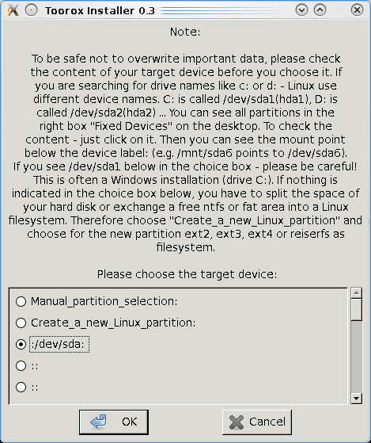
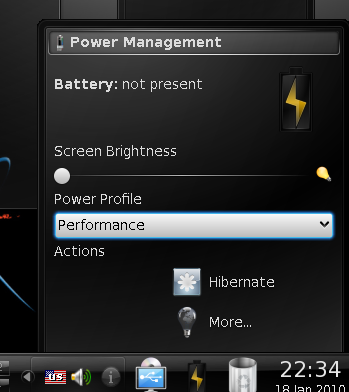

彈性過人的新 Linux 發行版本 — Toorox

◎ 簡介
資訊業界的訊息瞬息萬變，短短的幾天時間，世界上很可能又會出現一些新技術或新知識，考驗著所有資訊從業人員的學習能力。以 Linux 為例，目前較為流行或通用的發行版本 (Distribution) 大約有五、六種之多，但事實上幾乎每隔一段時間，便會有各種不同的發行版本推出新版本。對於喜歡求新求變的人們而言，永遠不會缺乏新的話題可以討論。
Linux 的發行版本在以往都是採用安裝光碟的方式釋出，使用者取得某發行版本的安裝光碟後，只能利用此光碟的內容進行作業系統的安裝作業。所以如果使用者想要了解某個發行版本的特色，只能從官方網站上取得的文件加以推測此版本的 Linux 發行版本是否符合個人需求。這樣的使用方式最大的缺點，在於使用者非得要實際進行硬碟內容的破壞動作（硬碟分割表重整、重新格式化、安裝等等），才能實際體驗該發行版本的特色。這樣的作業模式對於大多數的 Linux 初學者而言，是相當難以處理的情況。畢竟搞懂各種作業系統或檔案系統對於硬碟分割表、磁碟的處理方式，可能已經需要一段時間。如果在未能了解細節的情況下冒然進行新作業系統的安裝，對於硬碟資料的危害不言可喻。
有鑑於此，目前大多數主流的 Linux 發行版本，都已經採用 Live CD 的格式作為安裝光碟的選擇。使用安裝光碟開機時，使用者可以選擇是否直接進行系統安裝，或是先使用內建的 Live CD 模式進行操作，了解此版本的功能與特色之後，再決定是否將此光碟的內容安裝至硬碟之中。由於提供了使用者一個完善的試用方法，所以使用者可以先在不傷害硬碟資料的情況下使用 Linux ，了解相關細節後再決定安裝與否。如此一來便可以解決使用者在不安裝作業系統的情況下，無法熟悉該作業系統的問題，也不至於讓尚未習慣該作業系統安裝方式的初學者，在無意間誤刪硬碟資料的情況發生。
本文所要介紹的 Toorox ，是由德國人所發展的一套 Live CD Linux 發行版本（但實際上燒錄光碟時需使用 DVD 光碟片）。雖然是以 Live CD 作為主要的操作模式，但事實上也可以利用系統所提供的安裝功能，要整套作業系統安裝至硬碟或是 USB 隨身碟之中。Toorox 本身是以 Gentoo 這套 Linux 發行版本為基底，再採用 Knoppix 的技術所合而為一的 Linux Live CD 發行版本。之所以會採用 Knoppix 作為 Live CD 的技術，除了 Knoppix 本身屬於 Linux Live CD 的先驅以外，另一個可能的原因則是 Knoppix 一樣也是由德國人所研發而成，在使用上多了一份親切感。顯而易見的，採用 Gentoo 加上 Knoppix 所設計而成的 Toorox ，預設的圖形作業環境也是 KDE 。
安裝 Toorox 所需要的硬體，並不需要太高階的設備。以 Toorox 的最小系統需求而言，只需要 Pentium II 以上等級的 x86 相容 CPU ，加上 256MB 的主記憶體與 DVD 光碟機即可。當然如果希望 Toorox 可以執行得更為順暢，採用多核心的 CPU 加上 1GB 的記憶體與 DVD 光碟機，可以讓 Toorox 有如虎添翼的效果。
採用 Toorox 的時機非常多元化，事實上大多數的日常作業都能以 Toorox 完成。例如希望將硬碟中的資料備份出來，但硬碟中的作業系統已經損毀無法開機的情況。或是作為網路瀏覽之用，可以確保每一次執行較為敏感的操作時（例如使用網路銀行），瀏覽器本身或是相關的工具程式都是乾淨無虞的。至於 Linux 的新手，則是可以先行使用 Toorox 作為熟悉 Linux 的工具。如此一來可以在最短的時間內熟悉 Linux 作業系統，又不必擔心硬碟資料會因為誤動作而產生資料毀損的問題。如果有必要，亦可使用 Toorox 將整個作業系統安裝至硬碟之中。如果希望製作 USB 開機磁碟，則 Toorox 也提供了相關的工具程式，可以讓使用者在最短的時間內製作出一個可以進行開機與操作的 USB 隨身碟。不但可以直接使用此隨身碟進行開機，一些個人所建立的新檔案也能直接存放在隨身碟之中，而這也是 Live CD 的作業模式所無法達成的功能之一。

◎ Toorox 的特色
採用 Live CD 方式進行開機與操作的 Toorox ，最大的特色便是本身只需要使用電腦上的主記憶體即可執行，完全不會更動既有硬碟之中的資料。當然如果使用者有存取現有硬碟資料的需求，亦可採用掛載的方式將硬碟分割區掛至 Toorox 的檔案系統中，再進行相關作業。這樣的設計可以確保使用者在試用 Toorox 時，不會因為誤動作而刪除了原先硬碟之中所存放的資料。但 Toorox 在執行時，嚴格說來也並非完全不會主動存取現有硬碟之中的資料。這是因為如果硬碟之中原先安裝的作業系統也是 Linux ，且該硬碟之中有 Linux 所使用的 Swap 分割區，則 Toorox 也會加以利用，以便增加系統的執行效能。由於 Swap 分割區所存放的資料是作業系統所存入的暫存資料，其分割區之中的資料是否被改寫並不影響原先作業系統的穩定性，所以 Toorox 直接存取 Swap 分割區的作法並不會抵觸 Live CD 不會存取系統原有硬碟的設計理念。
另一個對 Toorox 使用者而言相當方便的功能，則是 Toorox 會採用 lshwd 工具，在系統開機時直接掃描硬體設備，並將所有需要的驅動程式直接載入系統。雖然 Linux 的驅動程式的支援方面不像 Windows 如此全面且廣泛，但只要不是太冷門的硬體，通常 Toorox 都能在開機時直接辨視出來，並找到相對應的驅動程式模組以載入記憶體，並與核心程式進行結合。
或許是因為 Toorox 是由德國人所開發的關係， Toorox 雖然也支援多國語系，但截至目前為止在開機時能選擇的語系只有英文與德文二種，而且預設語系會是德文。至於中文語系，或是其他國家的主流語言，則是全數不支援。或許將來在 Toorox 持續推出新版本時，會在多國語系的支援功能方面再作加強。

Toorox 所內建的軟體相當多元化，版本通常也是當時的最新版本（或接近當時的最新版本）。例如 2010 年一月所推出的最新版本，採用了 2.6.32 版的 Linux 核心。桌面作業環境採用 KDE 4.3.4，而 X Window 則是使用 Xorg-Server 1.6.5。其他像是 OpenOffice、VLC、Thunderbird 或是 K3b、GIMP 等 Linux 常見的軟體，在 Toorox 的發行版本中也可以直接找到。
而 Toorox 所提供的 Toorox Installer 程式，對於習慣將 Linux 直接安裝在硬碟的使用者而言也是相當方便。 Toorox 提供二種安裝模式，分別可以將 Toorox 的發行版本安裝在硬碟或是 USB 隨身碟之中。其中硬碟可以支援內接式硬碟或是外接式的 USB 硬碟，在安裝上都不會有太大問題。如果將 Toorox 安裝至 USB 隨身碟之中，則使用者只需要帶著這支隨身碟，即可在任何支援 USB 開機的電腦上執行自己的 Linux 作業系統，並且可以將所有需要儲存的資料存放在該隨身碟之中。操作上顯得相對方便許多。
Toorox 在開機後會自動產生二個預設帳號，其中一個是系統管理員 root 的帳號，另一個則是名為 user 的一般使用者帳號，使用者可以自行挑選合適的帳號登入系統並進行操作。這二個預設帳號的密碼分別是「root」與「user」，與帳號名稱完全相同。基於系統安全的考量，這樣的密碼顯然相當危險，不足以保護系統上的資料。如果使用者選擇將 Toorox 安裝至硬碟或是 USB 隨身碟，則需要再手動變更這二個帳號的密碼，以免遭人利用進行破壞。
由於 Toorox 預設使用的視窗管理程式為 KDE，所以在操作上與一般採用 KDE 的 Linux 發行版本並無太大不同，只是 Toorox 有針對部份功能進行改善，讓使用者的操作經驗可以更加完善。例如系統預設的檔案瀏覽器為 Konqueror ，螢幕擷取程式採用 KSnapshot 等等。
而在開機時可以直接選擇系統操作時的解析度，也是 Toorox 的巧妙設計之一。使用者在開機時可以先選擇所要使用的語系，再決定螢幕的解析度，從最標準的 1024x768 一直到時下最流行的寬螢幕解析度都有支援。雖然這樣的設計未必需要相當複雜的技術支援，但對於使用者而言則是提供了許多便利性。
◎ 結語
Linux 的發行版本不斷地推陳出新，幾乎已經讓一般的 Linux 初學者感到無所適從，不知道該如何進行選擇。雖然這樣多元化的選擇會讓使用者感到困擾，但從另一方面來看，可以擁有自主的選擇權，也未必是件壞事。 Toorox 提供了一套新的 Linux 發行版本選擇，而且在操作環境上也有三種不同的選擇，包括直接以光碟執行、安裝至硬碟執行，或是以攜帶性為主要考量的 USB 隨身碟等等，可以說是相當具有彈性的一套 Linux 發行版本。
如果硬要說 Toorox 有什麼缺點，恐怕在多國語系方面會是最為人所垢病的一點。雖然說開發者是德國人，採用德語作為預設語系無可厚非，但除了德文以外，只提供英文的操作介面仍然會讓人覺得不夠親切。畢竟在現今的社會中，對於英文有排斥感的人不在少數，能否針對世界各地人們所慣用的語言進行支援，會是 Linux 發行版本能否快速被使用族群所接受的一個重點。除此之外，Toorox 的華麗外觀，加上與 KDE 的完全整合，綜合來說還是相當值得所有人進行嘗試的一套 Linux Live CD 發行版本。
◎ 作者簡介
翁卓立
逢甲大學資訊工程學系畢業，現為台灣科技大學電子所在職專班學生。目前擔任韌體研發工作，主要使用 Embedded Linux 進行產品開發。著有「Linux 進化特區：Ubuntu 9.04 從入門到精通」等書。